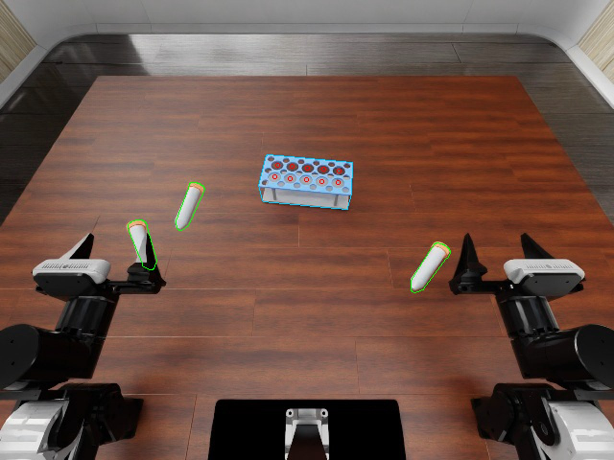
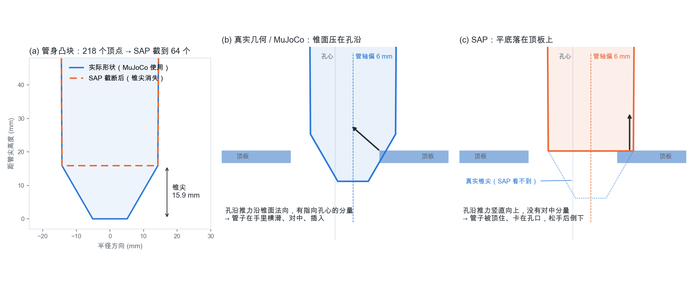
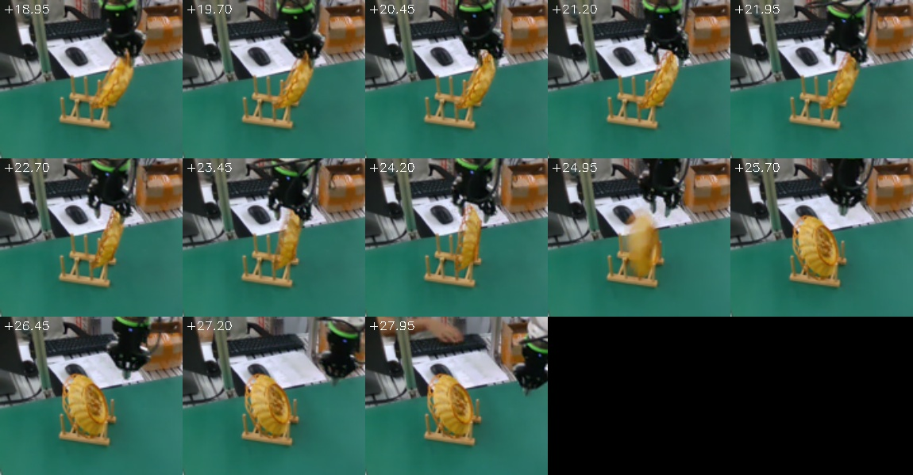
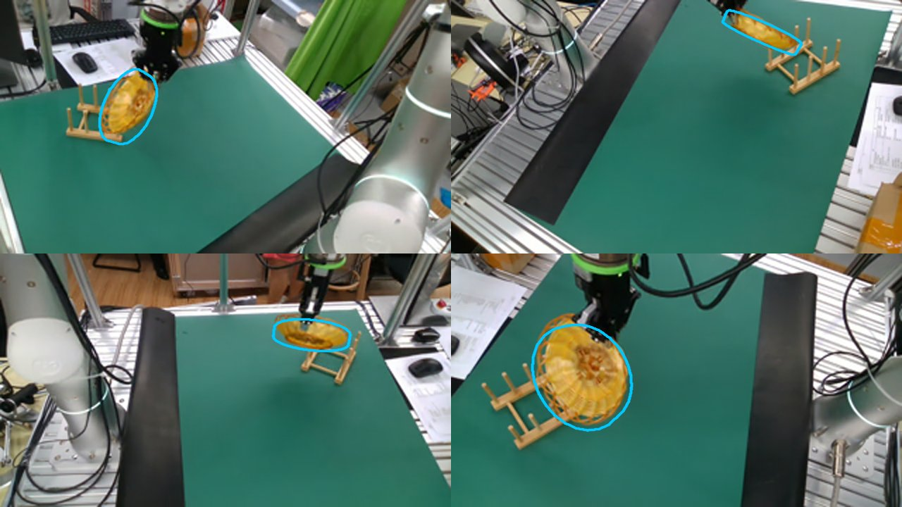

SAP Warp / Benchmarking / Reproduction studies
本页结论
叠碗任务的宏观结果相近，目前没有明显拉开两个模拟器的任务表现。 两者都呈现抓取、搬运和叠放过程。SAP 在选定释放后窗口内运动更小，MuJoCo 的末态共同几何采样重叠更少；这些局部差异不足以证明哪个更接近原始示范。同一带关节夹爪场景中，旧 SAP legacy 碰撞路径也能完成抓取、搬运和叠放；该任务尚未显示出必须更新碰撞后端才能 work 的收益。
插试管任务明显拉开了差距：MuJoCo 经 5 轮迭代最好插进 2/3（官方 40 分），SAP 新旧两版 5 轮都是 0/3。 SAP 的失败已定位到具体原因：加载凸网格时，顶点超过 64 个的凸块被截断，试管 15.9 mm 的锥形尖端整段丢失，管子在 SAP 里变成平底圆柱，卡在只有约 1 mm 间隙的孔口。这是碰撞层的几何表示问题，不是 SAP 求解器的问题。
真实机器人的盘子放上碗架（RH20T）在“放进去”这一段上，用整段任务选定的参数，SAP 成功，MuJoCo 失败。 盘子已经夹在手里（姿态由真实视频拟合），只回放下放和松手：SAP 形成稳定夹持，把盘子放进与真实相同的一格；MuJoCo 在半秒内丢掉了盘子。原因已定位：一个指垫正好压在盘壁两个凸块的接缝上，MuJoCo 给出的接触法向沿接缝侧向且互相相反，接触调硬后把盘子挤飞。MuJoCo 原生默认的软接触能放进去，但整段任务搬运时会打滑；SAP 一组参数两件事都做到了。完整任务（从抓起开始）两个引擎都失败：真实盘子在手里翻转了约 55°，刚体模型都复现不了。（本节已于 2026-11-17 更正一处坐标错误并全部重跑，见该节说明。）
1. 原子能力 本次无新增结果
用于隔离摩擦、支撑、碰撞等单一机制。本部分保留为后续原子实验入口；已有基础实验见 Part I 和 Part III 。本次新增的是下面的复合任务。
2. 复合任务
同一条机器人／夹爪运动作为输入，碗等被操作物体的运动作为评价对象。轨迹复刻质量依据与原始物体运动的接近程度评价，不采用 policy 的任务 reward 门槛替代。
2.1 RoboDojo · Stack Bowls 叠碗 单 episode 诊断
来源是 RoboDojo 官方项目 及其 公开数据集 中的 stack_bowls / arx_x5 / episode_0000000。原示范依次将右、左两侧的碗搬到中间碗上。这里回放的是官方仿真示范 ，不是实机测量轨迹。
先看原示范与模拟结果
三段视频使用相同时间轴，均展示 0–9.56 s 的录制时间范围。模拟画面由已记录的原生物体状态回放生成；只显示分离夹爪和共同碰撞几何，未显示完整机器人手臂，也未复刻纹理。
从头同步播放 全部暂停 也可使用各视频自带的播放控件。
浏览器不支持视频，下载官方示范 。 原始示范 · RoboDojo 官方头部相机；三只碗、双臂 ARX X5。
官方视频来源 ↗ 浏览器不支持视频，下载 MuJoCo 视频 。 MuJoCo 4.0.0 · CPU 带关节的夹爪 r3；原生求解器记录状态。不是 MuJoCo Warp。
下载视频 浏览器不支持视频，下载 SAP 视频 。 SAP Internal + Newton Convex 2325082 · Warp 1.18.0 / CUDA；同一夹爪 r3。
下载视频
实验设计
输入固定： 相同初始布局、25 Hz 机器人／夹爪记录、相同插值与控制映射；1 ms 积分步长，9.56 s 原记录后追加 1 s 观察尾段。物体固定： 三只相同的 0.35 kg 碗，共同质量／惯量与摩擦系数 μ=0.6；每碗使用同一套 64-piece CoACD 几何。初始布局和碗型号依据首帧形状估计，物体身份未获精确确认。夹爪固定： 官方碰撞 hull、滑动关节及 0–44 mm 限位；官方命令映射和 PD 参数。机器人手臂由分离夹爪基座伺服替代。比较范围： 同一 episode、各一次完整轨迹。比较物体运动、模拟内部一致性和最终可见结果；不据此报告多任务成功率或速度性能排名。
关键限制：公开 HDF5 有机器人状态／动作、三路 RGB 和相机标定，没有逐帧碗位姿真值。视觉恢复的位姿只能作为带不确定度的 estimated reference。
五步调试与参数冻结
记录中可核实的过程分为以下五步；它们是复现与核验步骤，不等同于每个引擎搜索五套接触参数 。
核对数据和首帧。 固定源数据 revision，确认时间轴和相机坐标；按首帧轮廓拟合初始场景，不用模拟终态反推布局。统一几何与惯量。 建立共同凸分解，检查碗腔没有被填实；两引擎使用同一几何、质量和惯量。修正夹爪模型与控制。 早期独立手指模型只能抬起约 2 cm。核对命令语义后，改为官方滑动关节和驱动；两个碰撞后端都可抬起约 12–15 cm。更新并对照碰撞后端。 同步本地 SAP Internal，启用 collision/newton_convex/，在固定 r3 场景下对照 legacy；通过无物体驱动和主机／CUDA graph 接触轨迹核验。冻结设置，统一评估。 保留各引擎的原生接触参数，不以末尾速度最小挑选“最好”配置。用相同释放后窗口处理已有轨迹，缺少的参考位姿和接触连续性留空。
冻结参数：如何确定、实际用了什么
驱动参数来自官方夹爪配置及无物体跟踪核验；接触参数保留当前原生设置，未做物理等效刚度／阻尼标定，也未进行等预算五候选择优。
夹指：Kp=2300 N/m、Kd=100 N·s/m、力上限 100 N；关节范围 [0, 0.044] m。 共同基座伺服：平移刚度 20000 N/m、转动刚度 20 N·m/rad；力／力矩上限 200 N / 20 N·m。 MuJoCo：solref=(0.02, 1)，solimp=(0.9, 0.95, 0.001, 0.5, 2)，100 iterations，tolerance 1e−8。 SAP：shape ke=2500 N/m、τ=0.01 s、原生 shape gap 0.1 m；gap 是接触激活范围，不是实际穿透量。相同两形状合成的 pair ke=1250 N/m、τ=0.02 s。Newton Convex 后端显式启用。 这些数值不是跨引擎等价的材料常数，因此不能把阻尼更强或速度更小直接解释成物理更准确。
结果：能区分内部行为，尚不能区分复刻精度
Post-release settling： 共同窗口 9.06–9.56 s，每碗 51 个状态样本，间隔 10 ms。RMS 对速度向量模长平方做时间积分，不是分量 RMS 的平均。
指标 MuJoCo SAP + Newton
上层碗线速度 RMS（mm/s） 0.9804 0.0687 中层碗线速度 RMS（mm/s） 0.3269 0.0540 底层碗线速度 RMS（mm/s） 0.0342 0.0298 上层碗角速度 RMS（rad/s） 0.01995 0.00108 上层碗 0.5 s 净漂移（mm） 0.4894 0.0290
SAP 在这个窗口内更静，MuJoCo 有小幅缓慢漂移。但如果原示范也有滑动，更早停住并不一定更忠实；本项不能独立给引擎排名。
Geometric validity： 使用相同的共同几何顶点采样方法，仅检查 t=10.56 s 的末态，每碗采样 1024 个顶点。
末态采样穿透下界（mm） MuJoCo SAP + Newton
底层／中层碗 0.0540 1.5766 上层／中层碗 0.0305 0.4658 所有已检查物体对的最大值（含桌面） 0.0895 1.5766
这是末帧的采样下界，不是精确穿透，也不是全程最大穿透。共同几何为近似表示；局部壁厚与穿墙检查尚未完成，因此暂不将这些值换算成“有效／无效成功”。
评价层 现有证据 当前结论
Physical Fidelity 检查过头部关键帧及 7 个时刻的三视角图，但未形成带不确定度的可靠三维位姿估计；有效参考覆盖 0/720 物体帧，最终 0/3。 trajectory / final-pose reference error 未评估。不是零误差，也不表示所有视频帧都不可恢复。 Contact continuity 当前成对比较缺少按物体对的有效接触时间序列。 未评估；不以总接触点数代替。 Task Outcome 参考和两引擎的视频观察均为释放后保持三碗叠放。 视觉 outcome agreement 一致；严格 valid success、false success / false failure 暂不判定。
如实结论： 这个 episode 对两个模拟器的宏观任务结果区分度有限。已有指标显示“SAP 更静、MuJoCo 末态采样重叠更少”，没有足够参考证据判断谁的轨迹复刻更好，也没有多 episode 的成功率结论。旧 SAP legacy 碰撞路径在同一夹爪场景下同样 work，目前不能用此任务宣称更新后的宏观任务表现更好。
补充结论：旧 SAP 碰撞路径也能 work
不是“旧版不行、更新后才行”。 在相同的带关节夹爪 r3、相同场景和输入下，legacy 与 Newton Convex 两条碰撞路径都呈现了抓取、搬运与三碗叠放。这个 episode 没有在宏观任务结果上区分出新路径的优势。
现有单次对照 SAP + legacy 碰撞 SAP + Newton Convex
左侧碗最大抬升（cm） 15.14 15.15 右侧碗最大抬升（cm） 11.86 11.84 视觉上完成搬运和叠放 是 是 末态最大采样穿透下界（mm） 0.3312 1.5766
新路径尾段运动较小，但采样几何重叠没有同步改善。这个结果支持的是“旧路径也可用，更新在本任务上的宏观收益尚未体现”，不是“新旧在所有方面都没有差别”。目前也没有参考位姿误差可以判定哪条路径复刻得更准确。
对照范围：固定当前 SAP 求解器，切换 legacy／Newton 碰撞路径；不是完整旧构建与新构建全部改动的对照。早期只能抬起约 2 cm 的旧 r2 使用独立手指模型，不能与当前带关节模型混为版本差异。这里的 work 指可见搬运与叠放，严格有效成功仍受几何审计缺项限制。
查看 legacy 与 Newton 的已有轨迹视频 浏览器不支持视频，下载对照视频 。 左：legacy；右：Newton Convex。同一套带关节夹爪 r3，回放已有原生状态。视频含额外 1 s 模拟观察尾段，总时长约 10.6 s；本次没有为这项补充结论新增模拟。
来源、协议与结果文件
数据 revision：1127bda94f172d757386945af3eb3a6754d1a4e6。机器人／夹爪配置参考 RoboDojo 代码 revision fbfbbcb3801397fa00dcffaef3ca64d97c3fe76f。官方数据和示范视频来源：RoboDojo-Benchmark，数据集标注 Apache-2.0；本页模拟回放及指标由本实验生成。
参考视频可观测性检查 上层碗和部分搬运过程可见，有估计位置／轴线的潜力；叠放后的下层碗遮挡明显。可见性审查未把遮挡位姿补成可靠参考。
仅使用参考视频的多视角检查；未依据模拟结果拟合参考位姿。
2.2 RoboDojo · Insert Tubes 插试管 单 episode · 每引擎 5 轮迭代
同样来自 RoboDojo 官方项目 及其公开数据集 ：insert_tubes / arx_x5 / episode_0000000，是官方自动生成的仿真示范 。任务要求把桌上平躺的三支离心管依次竖直插进架子的孔里：管子要真正进入开口、达到规定深度、保持直立，松手后由架子支撑，不能停在孔口、斜靠或卡住。示范中左臂插第 1、3 支，右臂插第 2 支。
选这个任务，是为了检验持续接触下的插入、孔壁摩擦和卡滞。孔的径向间隙只有约 1 mm，而且示范在管尖离孔底约 19 mm 时就松手，管子必须自己沿孔滑到底。SAP 接触稳定，这可能有帮助；但若耗散或摩擦过大，也可能更难插入，所以这是一个有价值的反向检验。
先看原示范与模拟结果
三段视频时间轴相同。官方示范时长 12.76 s。模拟视频 1280×960，相机取官方头部相机位姿，在 12.72 s 的回放后追加 2 s 静置观察，总长 14.72 s。两个引擎各展示 5 轮中最好的一轮。模拟画面是用已记录的状态回放生成的，只显示分离夹爪，未显示机器人手臂和纹理。
从头同步播放 全部暂停 也可使用各视频自带的播放控件。
浏览器不支持视频，下载官方示范 。 原始示范 · RoboDojo 官方头部相机，640×480（官方原始分辨率）。三支管都插进前排孔中。
官方视频来源 ↗ 浏览器不支持视频，下载 MuJoCo 视频 。 MuJoCo 4.0.0 · 第 2 轮（最好） 第 2、3 支插到底（倾斜约 1°）。第 1 支在夹爪到达前就在桌面上滚走了。
下载视频 浏览器不支持视频，下载 SAP 视频 。 SAP + Newton Convex · 第 2 轮 三支都能抓起、搬运，但都卡在孔口，松手后倒下。
下载视频
浏览器不支持视频，下载特写视频 。 孔口特写：第 2 支管下降入孔（6.7–7.7 s，4 倍慢放） 左：MuJoCo，管子碰到孔沿后在手里横向滑动、对中，然后滑到底。右：SAP，管子停在孔口，松手后倒下。画面中横躺在架子上的是 SAP 里先前倒下的第 1 支。注意：渲染统一使用真实的管子形状，所以 SAP 画面里锥尖看起来"插进"了顶板。这正是问题所在：SAP 内部的管子没有这段锥尖（见下文分析）。
下载视频 查看 SAP 旧版（legacy 碰撞路径）第 2 轮视频 浏览器不支持视频，下载视频 。 旧版 SAP（sap-fix-gamma，legacy 凸体碰撞）使用相同参数，失败过程与新版一致：三支都卡在孔口后倒下。
实验设计
输入固定： 319 帧、25 Hz 的双臂末端位姿和夹爪指令（12.72 s），与叠碗任务相同的插值、控制映射和带关节夹爪 r3（官方手指凸包、滑动关节、PD 2300/100、上限 100 N；手臂由分离夹爪基座伺服代替）。积分步长 1 ms，回放后追加 2 s 观察。场景还原： 数据集只有机器人数据，没有物体位姿，所以由我们自己还原：
架子：三次松手时的夹爪位置正好落在官方架子前排 0/2/4 号孔上（孔距 72 mm），拟合残差 < 0.25 mm。把 x 也放开拟合得到 0.0000，与官方配置 x=0 一致，可作独立检验。
试管：横向位置和朝向来自抓取时的夹爪几何；沿管轴的位置由首帧图像中橙色管盖确定，重投影误差 0.7–2.7 px。三次抓取的接近深度（0.145 m）和"管尖到抓取点"距离（0.071 m）互相吻合。
几何与物性（两个引擎完全相同）：
试管：官方碰撞网格切成两块精确凸体，管身半径 14.0–14.6 mm（下端是 15.9 mm 长的锥尖），管盖 17.5 mm，质量 0.06 kg。
架子：静态。顶板厚 4 mm，孔为直孔，半径 15 mm（已核对官方网格，没有倒角）；孔由 16 个凸扇区围成，只会比真实孔略大（≤0.29 mm），不会变小。孔底比顶板上表面低 54 mm。
所有接触统一摩擦系数 μ=0.225，即官方试管 0.45 与架子 0 的 PhysX 平均值。
成功判据： 照搬官方代码。每支管须同时满足：插入深度 > 45 mm（管尖距孔底 ≤ 9 mm），管尖在架子范围内，管轴与竖直方向夹角 < 30°。插进 1/2/3 支分别计 20/40/100 分。引擎： MuJoCo 4.0.0（CPU）；SAP 旧版（sap-fix-gamma，legacy 凸体碰撞）；SAP 新版（2325082，Newton Convex 碰撞）。Genesis IPC 本次未跑。
场景还原叠加图 
还原出的试管（绿）、架子（青）和孔位（红）投影到官方首帧图像上。还原只使用机器人轨迹和首帧图像，没有用任何模拟结果。
5 轮迭代调试
规则：第 1 轮用各引擎原生默认参数；之后每轮只根据上一轮暴露的问题，调整引擎自身的数值参数。几何、质量、摩擦、轨迹、步长始终不变。SAP 新旧两版每轮暴露的问题相同，所以每轮用同一组参数。
轮次 MuJoCo 4.0.0 设置 插入数 为什么这样改 / 结果
1 原生默认 0/3 第 1 支在桌面上滚走；另两支在手里滑移 20–58 mm、转 11–39°，最终倾斜超限。 2 椭圆摩擦锥、impratio=10、solref=(0.004,1) 2/3 针对抓取打滑和 5.6 mm 穿透。第 2、3 支插到底；第 1 支仍在抓取前滚走。 3 + multiccd 2/3 结果与第 2 轮逐位相同：MuJoCo 4.0 默认已开启多点接触，这一轮实际没有改动，照实计入次数。 4 + noslip_iterations=10 1/3 想抑制管子在桌面上的蠕动，反而变差：第 3 支穿过桌面掉落。 5 回到第 2 轮，impratio=100 2/3 与第 2 轮相同。
轮次 SAP 设置（新旧两版相同） 旧版 新版 为什么这样改 / 结果
1 原生默认（pair ke=1250 N/m） 0/3 0/3 能抓起、搬运，但手指压进管子约 7 mm；三支都卡在孔口，松手后倒下。 2 pair ke=5e4 N/m 0/3 0/3 穿透降到 0.4–0.7 mm，仍卡在孔口：偏心停在 4–12 mm，管子没有对中。 3 + 静摩擦容差 1e-3 m/s 0/3 0/3 检验"摩擦太黏、管子在手里滑不开"的假设，几乎没有变化。 4 静摩擦容差 1e-2 m/s 0/3 0/3 放大到默认值的 100 倍仍不变，排除了摩擦正则化的原因。 5 pair ke=5e4，接触检测距离 0.1 m → 2 mm 0/3 0/3 旧版有一支通过了孔口，但随后穿透底板和桌面（漏碰撞），不算成功；新版仍卡在孔口。
参数是在同一条回放上调出来的，结果代表"调参后能达到的最好表现"，不代表泛化能力。我们自己的一个建模错误（试管凸块切分阈值写错）已在第 1 轮之前修正，那次无效运行不计入 5 轮。
结论
引擎 5 轮中最好的结果 主要问题
MuJoCo 4.0.0 2/3，官方 40 分 （第 2 轮）平躺的管子在软接触下会在桌面上缓慢滚动；第 1 支在夹爪到达前已滚走。单独测试中，只放桌面和一支管时同样会滚，说明与该管的初始位姿无关。 SAP 旧版 0/3 卡在孔口后倒下。根因在加载网格这一步：SAP 截断凸包，丢掉了试管的锥形尖端（见下文）。 SAP 新版（Newton Convex） 0/3
其他细粒度指标（轨迹误差、静置速度、穿透等）这里不再列出：SAP 没有一支插入成功，这些指标没有比较价值。
SAP 为什么失败：锥尖在加载时被截掉了
一句话： SAP 加载凸网格时，若一块超过 64 个顶点，就会提前终止凸包计算，得到一个不完整的形状。试管下端 15.9 mm 的锥尖因此整段消失，管子在 SAP 里变成平底圆柱。平底圆柱一旦偏离孔心超过约 1 mm，底边就落在顶板上，只能被竖直托住，没有任何力把它推向孔心，于是卡在孔口。这是碰撞层的几何表示问题，不是 SAP 求解器的问题。

(a) 管身凸块：实际形状（蓝）与 SAP 截断后的形状（橙）。(b) 真实几何下，锥面压在孔沿，推力有指向孔心的分量。(c) SAP 中，平底落在顶板上，推力竖直向上。 这个结论是一步步验证出来的，每一步都排除了一部分可能：
先排除"摩擦或耗散太大"。 5 轮迭代中，提高刚度把穿透降到 0.5 mm 以下，把静摩擦容差放大 100 倍，都没有改变结果。在卡住的那 0.7 s 内逐个记录接触力，发现两个引擎的手指摩擦都已经用到上限（切向力 / μ·法向力 = 1.00），管子在两个引擎的手里都在滑。所以差别不在摩擦大小。差别在孔沿推力的方向。 管尖碰到孔沿时，三个引擎里的管子都偏离孔心约 5–9 mm，起点相近。
MuJoCo：孔沿接触法向沿锥面倾斜（竖直分量 0.53，指向孔心分量 0.85），给出 2.3 N 指向孔心的力。管子在手里横向滑动，30 ms 内从偏 8.6 mm 对中到 0.6 mm，然后滑到底。
SAP 旧版、新版：法向几乎竖直（竖直分量 0.99–1.00，指向孔心分量 ≤ 0.06）。孔沿只把管子往上顶（10–13 N），横向力约为 0；管子在手里向上滑，横向不动，偏心一直停在 4–6 mm。
单独测碰撞检测，SAP 看不到锥面。 只做碰撞检测、不做动力学，把管子摆成偏心 6 mm、锥面刚碰孔沿的姿态，逐步下压。MuJoCo 报告锥面与孔沿接触，法向倾斜，与解析值（竖直分量 0.66、指向孔心 0.75）接近。SAP 新旧两版完全看不到这个接触，只报告"管底在顶板上方 5.7 mm"，法向竖直。立在空桌面上，SAP 的距离多出整整一段锥尖。 把管子竖直立在桌面上方，管尖离桌面 10 mm 到 −1 mm。MuJoCo 从管尖算距离；SAP 在每个高度上都多出 15.88 mm ，正好是锥尖的长度。说明 SAP 里的管子没有锥尖。定位到代码。 SAP 加载内联凸网格时（sap_warp/loader/scene.py），若一块超过 MAX_HULL_VERTICES = 64 个顶点，就调用 qhull、选项为 Qt TA60，意思是"加入 60 个顶点后停止"。得到的是一个没有算完的凸包，不是均匀简化后的形状。我们的管身凸块有 218 个顶点；用同样的选项复算，凸包最低点在真实管尖上方 15.88 mm，与第 4 步的测量完全一致。新旧两版都是这段代码，所以表现相同。MuJoCo 默认不限制凸包顶点数，保留了完整形状。
这样整个失败过程就能完整解释： 在 SAP 里，一个半径 14 mm 的平底圆柱对着半径 15 mm 的孔下降，偏心稍大，底边就压在顶板上。接触只能是竖直的面对面接触，没有锥面把它导向孔心。竖直推力超过手指摩擦上限后，管子在手里往上滑，横向不动。松手时它偏心地立在孔沿上，随即倒下。调刚度、调摩擦都改变不了几何形状，所以 5 轮迭代都无效。
与原子能力实验的关系： 这和 Part I round socket 中"孔口支撑"的问题属于同一类：都是 SAP 碰撞层在锐利孔沿附近给出了错误的几何，而 SAP 求解器本身工作正常。那次是接触点去重容差过大、MPR 距离偏差，漏掉了孔口的关键接触点，导致本应站住的圆柱翻倒；Newton Convex 碰撞路径修复了其中一部分。这次的问题更早一步，出在加载网格时，新路径也没有修复。共同点是：在间隙小、依赖细节几何引导的接触中，SAP 会悄悄丢失关键几何，而且不报错、不警告。
结论的性质：两个引擎读入的是同一份网格文件，截断发生在 SAP 内部，属于引擎的默认行为，不是我们的实现错误；按约定不修改引擎，照实报告。若要做"形状一致"的补充对照，只需预先把凸块切成每块不超过 64 个顶点，不用改 SAP 代码。其他 SAP 实验中凡是超过 64 个顶点的凸块，都可能存在同样的问题，值得逐一核查。
来源、数据与文件
数据 revision：1127bda94f172d757386945af3eb3a6754d1a4e6；任务定义与成功判据参考 RoboDojo 代码 revision fbfbbcb3801397fa00dcffaef3ca64d97c3fe76f（insert_tubes.py、func_parser.py）。试管资产 Rigid/test_tube/00002，架子资产 Geometry/test_tube_slot/00000。官方数据和示范视频来源：RoboDojo-Benchmark，数据集标注 Apache-2.0；本节的模拟回放、视频和分析由本实验生成。
2.3 RH20T · Dish on Rack 盘子放上碗架 真实机器人 · 单 episode · 只回放“放进去”
来自 RH20T 公开数据集的真实机器人示范 ：cfg2（Flexiv 机械臂 + 大寰 AG-95 夹爪）task_0050_user_0016_scene_0009，真实标签为成功。操作者遥操作机械臂，捏住平放在桌上的圆形藤编盘子边缘，抬起、搬到木制碗架上方，竖着插进一格，然后松手、撤离。与前两个 RoboDojo 任务不同，这里的参考是真实世界：物体的形状、位置都要从 7 个固定相机的视频里还原，接触的真实过程也只能从视频里看。
这个任务原本要回放完整过程（抓起→搬运→放进去）。完整回放两个引擎都失败，原因是同一个建模局限（见实验设计 ），所以本节只比较最后一段：盘子已经夹在手里，下放、插入、松手 。用整段任务调出的参数，这一段把两个引擎拉开了。
更正（2026-11-17）： 本节首次发布时，仿真起点有一处我们自己的坐标错误：盘子网格本身已经以质心为原点，我们又加了一次质心偏移，使起点沿盘子轴线偏了 8.7 mm，手中姿态拟合的约束也因此放错了位置。现已修正，手中姿态重新拟合，所有片段回放全部重跑，视频改为三维重建渲染。修正后，选定参数下的结论不变（SAP 成功、MuJoCo 失败）；但 MuJoCo 原生默认参数的结果由失败变为成功，原文“MuJoCo 的失败与参数无关”的说法已撤回，下文均为修正后的结果。
先看原始视频与模拟结果
三段视频时间轴相同，都是抓取后 +14.3 s 到松手后 2 s（+21.95 s），共 7.65 s，原速播放，1280×720。左边是真实相机 105422061350 的原始画面（官方 320×180，放大 4 倍）。中、右两段是模拟结果的三维重建渲染：相机取同一个真实相机的标定位姿和焦距，场景里是还原出的桌面、碗架、盘子，以及一个简化的 AG-95 夹爪（指垫在记录的位置上，手指、机身、法兰只是外形示意）。渲染只回放已记录的状态，不推进物理。两个引擎各用整段任务 5 轮调参中选定的那组参数（见参数选择 ）。
从头同步播放 全部暂停 也可使用各视频自带的播放控件。
浏览器不支持视频，下载真实视频 。 真实示范 · RH20T 盘子竖着捏在手里，下放进碗架最边上那一格；+19.95 s 夹爪张开后，盘子立在槽里，靠着一根手指。
下载视频 浏览器不支持视频，下载 MuJoCo 视频 。 MuJoCo 4.0.0 · CPU · 第 4 轮参数 开始后约 0.4 s 内，盘子在指间剧烈晃动，手指穿过盘壁，盘子脱手掉落，没有进槽。
下载视频 浏览器不支持视频，下载 SAP 视频 。 SAP + Newton Convex · 第 5 轮参数 盘子一直夹在手里，放进与真实相同的一格（沿导轨方向偏差 1 mm）；松手后立在槽里、靠着一根手指，与真实一致。
下载视频
查看 MuJoCo 原生默认参数的同一段（这一段成功，但整段任务搬不住） 浏览器不支持视频，下载视频 。 同一起点、MuJoCo 原生默认参数（软接触）：盘子先顺着手指方向被推出约 1 cm，之后形成正常夹持，放进同一格。但这组参数在整段任务里搬运时盘子在手里滑了 77 mm，没有搬到架子上（见参数选择 ），所以不是整段任务的选定参数。
查看真实示范的完整过程（抓取 → 放入 → 撤手后翻倒） 浏览器不支持视频，下载完整视频 。 三个固定相机，原速，从抓取前 2 s 到录像结束（约 30 s）。注意两件事：① 搬运途中，盘子在手里绕边缘向下摆了约 55°，从平躺变成接近竖直；② 松手后盘子已经立在远端那格里，但约 +23 s 机械臂撤离时碰到了盘子，它向前翻倒，最后斜靠在近端那格。

松手前后的真实帧序列（每 0.75 s 一帧）：+19.7 到 +24.2 s 盘子立在远端那格，+24.95 s 翻倒，+25.7 s 起斜靠在近端那格。数据集的“成功”标签对应的是翻倒之后的姿态。
实验设计
为什么只回放“放进去”：
真实盘子在搬运途中，在手里绕边缘切线（夹爪的 x 轴）向下摆了约 55°。夹爪开度全程保持 8.3 mm、一点没变，说明这是藤编在捏点处的局部变形，不是盘壁在两指之间整体倾斜（那样手指至少要被撑开约 6 mm）。
两个引擎里的盘子是刚体，指垫是刚性平板，在几何上就转不过去。整段任务调参中，盘子在手里只转了 0–9°（SAP 0–1°，MuJoCo 3–9°），最后都平躺在架子钉顶上，两个引擎失败方式相同。
真实机器人撤离时碰翻了盘子（见上方完整视频），这一步属于偶然事件，也不适合作为比较对象。
因此只回放：盘子已经在手里 → 下放 → 插入 → 松手。松手后机械臂原地不动 ，静置 2 s 后判定。
起点： 抓取后 +14.30 s，此时夹爪移动最慢（0.002 m/s），盘子离碗架不到 1 mm。手中姿态由 7 个固定相机的轮廓拟合得到，约束条件是“夹爪 TCP 在盘壁上”（5 个自由度：3 个旋转、捏点在壁上的高度、±10 mm 径向偏移），平均 IoU 0.58，两个随机种子结果一致。正反面歧义： 盘子只有 27 mm 深，绕半高处翻个面，轮廓几乎一样（IoU 0.583 对 0.581），视频分不出它朝哪一面。两种解释下，捏点分别在盘口边缘或盘底边缘。我们选盘底边缘那一种作为主起点：它与抓取时的捏点（盘底以上 3.6 mm）是同一处，而搬运中夹爪开度和夹持力都没变，盘子不太可能沿盘壁滑动 24 mm。另一种作为稳健性检查也跑了，结论相同（见结论 ）。起点有约 2–3 mm 的指垫重叠，两个引擎相同： 盘壁是被斜着捏住的，而记录的夹爪开度只有 8.3 mm。真实情况下藤编被压扁了；刚体模型里，在 ±6 mm 平移、手指多张开最多 20 mm 的范围内都找不到零穿透的起点。我们试过“手指先多张开 20 mm 再合拢”，手指快速合拢时在两个引擎里都直接穿过了斜着的盘壁，所以放弃。最终两个引擎用完全相同的、带重叠的起点，引擎怎么处理这个起点，算作引擎自己的结果。输入： 记录的 TCP 位姿（125 Hz）和夹爪开度。夹爪基座用限幅弹簧阻尼跟踪 TCP（K_t=1e5 N/m，上限 300 N）。手指的规则只有一条：目标开度 = 记录开度 − 每指 3 mm，伺服刚度 5e4 N/m，力上限 102.5 N（AG-95 的 100% 力档）。积分步长 0.5 ms。几何与物性（两个引擎完全相同）：
盘子：半径 106 mm、高 27 mm、壁厚 8.3 mm（取夹爪夹住时的开度）、0.15 kg，由 25 个凸块组成（每块 8 或 64 个顶点，都不超过 SAP 的 64 顶点上限，不涉及插试管一节的凸包截断问题）。指垫 20×6×32 mm。
碗架：静态，由多视角拟合得到，长 137 mm，钉高 79 mm，槽距 44.7 mm。桌面平面由标定板外参得到。
摩擦：指垫–盘子 μ=0.6，盘子–碗架/桌面 μ=0.5。
成功判据（松手后 2 s）： 碰到碗架（≤3 mm）、与真实盘子放在同一格（沿导轨方向与真实位置相差不超过半个槽距 22 mm）、盘子轴线与导轨夹角 ≤45°、倾角 ≤58.5°、静止。“靠在手指上”只记录、不扣分，因为真实盘子同样靠着手指。与原协议的差别：原协议用“质心在碗架范围内（沿导轨 ±69 mm）”。真实盘子放在最边上那一格，按修正后的拟合，松手时质心在 −69 至 −78 mm（取决于正反面），正好压在或超出边界，连真实数据都不能稳定通过，因此改为“与真实同一格”。这条调整是在看到修正后的结果之后做的，两个引擎同样适用；按原判据，主起点下 SAP 第 5 轮和 MuJoCo 原生默认都会因超出边界 5–8 mm 而判失败（另一种正反面起点下 SAP 第 5 轮按原判据也成功），MuJoCo 第 4 轮无论按哪种判据都失败。 引擎： MuJoCo 4.0.0（CPU）；SAP 新版（2325082，Newton Convex 碰撞，每个场景接触上限 3000，全程无溢出）。每组参数只跑 1 次确定性回放。
手中姿态拟合叠加图（+14.3 s） 
仿真起点的盘子姿态（青色轮廓）投影到 4 个固定相机的真实画面上。拟合只用了真实视频和机器人轨迹，没有用任何模拟结果。
参数选择：沿用整段任务的 5 轮调参
整个任务最终要从头到尾回放，所以“放进去”这一段不单独调参，而是直接用整段任务调参中最适合整个任务的那组。整段任务调参的规则：第 1 轮用原生默认参数，之后每轮只根据上一轮的结果调整引擎自身的数值参数（穿透超过 1 mm 加刚度，滑移超过 10 mm 或没搬起来加摩擦，否则二者交替）；几何、质量、摩擦系数、夹持力、轨迹、步长始终不变。
轮次 MuJoCo 4.0.0 设置 整段结果 穿透 / 手中滑移
1 原生默认 没搬住 5.2 mm / 77 mm 2 solref=(0.0062,1)搬到架子上方，但平躺在钉顶上 1.3 mm / 13 mm 3 solref=(0.0036,1)1.0 mm / 8.1 mm 4（选定） + impratio=10 0.9 mm / 2.3 mm 5 impratio=1001.1 mm / 2.5 mm
轮次 SAP 设置 整段结果 穿透 / 手中滑移
1 原生默认（pair ke=1250 N/m） 放下后盘子挂在手指上 2.8 mm / 1.9 mm 2 pair ke=7.0e3 N/m 搬到架子上方，但平躺在钉顶上 2.5 mm / 0.9 mm 3 pair ke=3.47e4 N/m 1.0 mm / 1.7 mm 4 + sigma=1e-4，静摩擦容差 1e-5 1.0 mm / 1.7 mm 5（选定） sigma=1e-5，静摩擦容差 1e-60.9 mm / 1.7 mm
选法：两个引擎从第 2 轮起都卡在同一关（放置），因此选物理误差最小（穿透和手中滑移最小）的一轮。参数是在同一条回放上调出来的，代表“调参后能达到的最好表现”，不代表泛化能力。
结论
指标（主起点，松手后 2 s） MuJoCo 4.0.0 · 第 4 轮 SAP + Newton · 第 5 轮
放进槽里（全部判据） 失败 成功 夹持是否成立（两指开度，盘壁 8.3 mm） 否：0.40 s 时盘子离开指垫，两指合到 2.3 mm 是：两指稳定在约 10.5 mm 与真实同一格（沿导轨偏差） 否（盘子平躺，离那一格约 10 cm） 是（1 mm） 倾角 / 与导轨夹角 90°（平躺） / 82° 25° / 1° 松手时与真实拟合位姿之差 269 mm / 161° 23 mm / 12° 是否靠在手指上 否 是（与真实一致）
补充 run（同一判据） 结果 说明
MuJoCo 原生默认（主起点） 这一段成功 两指被撑开到 18 mm，形成正常夹持；同一格偏差 4 mm，松手时与真实相差 22 mm / 19°。但这组参数在整段任务中搬运时滑了 77 mm，没有搬到架子上。 MuJoCo 第 5 轮（主起点） 失败 0.05 s 内盘子被弹出指间，随后被抛出场景（数值发散）。 SAP 原生默认（主起点） 判据通过，不计为有效成功 两指合到 2.9 mm，比 8.3 mm 的盘壁薄得多，是指垫嵌在盘壁里把盘子带走的软接触伪象。 SAP 第 5 轮（另一种正反面起点） 成功 两指 11 mm；同一格偏差 10 mm；松手时与真实相差 30 mm / 18°。 MuJoCo 第 4 轮（另一种正反面起点） 失败 0.24 s 时盘子离开指垫，随后数值发散。
如实结论： 用整段任务选定的参数，在“盘子已经在手里、指垫与盘壁有 2–3 mm 初始重叠”这个起点上，SAP 在两种正反面起点下都形成了稳定夹持，并把盘子放进与真实相同的一格；MuJoCo 两种起点都在半秒内丢掉了盘子。MuJoCo 的问题与参数有关：原生默认（软接触）能挺过这个起点并放进去，但整段任务里搬运会打滑；调硬以后能搬运，却在这个起点上把盘子挤飞或发散。SAP 的第 5 轮参数两件事都做到了。这是 1 个 episode、每组参数 1 次的结果；最难的手中翻转那一步由视频给定，没有让引擎模拟；完整任务上两个引擎都失败，不能据此说 SAP 能完成整个任务。
MuJoCo 为什么失败：接缝处的接触法向是侧向的，接触一硬就把盘子挤飞
一句话： 盘壁由多个长方体凸块拼成，右指垫正好压在两块的接缝上。MuJoCo 对深度重叠的凸体对，取“把它推出去最短的方向”作为接触法向；在接缝处，最短的是沿接缝的侧向，而且两块给出的方向正好相反。接触调硬（第 4、5 轮）后，这两个相反的侧向接触互相硬顶，力冲到数十万牛，盘子在指间剧烈晃动，手指先被弹开再合拢，最后穿过盘壁，盘子脱手。原生默认的软接触下，同样的冲突要温和得多，盘子顺着手指方向慢慢被推出、重叠消失后形成了正常夹持。
这个结论也是一步步验证出来的（坐标都换到夹爪坐标系：x 为盘子边缘切线方向，y 为夹紧方向，z 为手指方向）：
只做碰撞检测，看第一帧的接触。 左指垫的 6 个接触，法向都沿夹紧方向（[0, 1, 0]），深度 2–3 mm，正常。右指垫跨在盘壁凸块 bk0 和 bk23 的接缝上：对 bk0 的法向是 [−0.99, 0.15, 0]，深度 14.3 mm；对 bk23 是 [+0.99, −0.15, 0]，深度 8.3 mm。两个法向几乎都沿切向，而且方向相反，几乎没有顶住手指合拢的分量。逐毫秒记录前 0.5 s 的接触力。
第 4 轮（选定，硬接触）：法向力合计出现约 47 万 N 的数值尖峰；手指在 20 ms 内被弹开到 55 mm，又合回来；盘子在指间来回晃，速度最高约 3 m/s；手指逐步合拢到 2.3 mm（目标开度），370 ms 后接触消失，盘子掉落。
原生默认（软接触）：接缝处的法向同样是侧向的（|n·y| 约为 0），但法向力只有几百牛。指垫对盘子的合力主要沿手指方向（+z，65–170 N），盘子被顺着手指方向推出约 1 cm，重叠从 14 mm 降到 3 mm；手指随之被撑开到 18 mm，之后形成正常夹持。
第 5 轮（更硬）：0.05 s 内数值发散。
换另一种正反面起点复查。 第 4 轮同样在 0.24 s 时丢掉盘子并发散，说明失败不依赖正反面的选择。
结论的性质：起点上的重叠来自我们的场景还原（刚体模型无法表示被压扁的藤编），两个引擎完全相同。MuJoCo 在接缝处选取侧向法向，属于引擎碰撞检测的默认行为；硬接触下由此引发的冲击和发散，是引擎对这一起点的反应，照实报告。对照实验：在干净的夹取几何下（没有初始重叠、手指从张开状态正常合拢到竖直的盘壁上），两个引擎都能夹住同一块 8.3 mm 盘壁并提起 10 cm（3 组参数 × 2 种夹持力，各 6/6）。所以 MuJoCo 的问题只在“深度重叠 + 凸块接缝 + 硬接触”这种组合下出现。
SAP 的优势在哪里，边界在哪里
优势一：从同一个带重叠的起点，形成了物理上合理的夹持。 选定参数下，开始后 50 ms 内 SAP 的两指就被盘壁撑开到约 10.5 mm（大于 8.3 mm 的壁厚，盘壁是斜着被捏住的），之后一直保持。说明 SAP 的接触力顶住了手指合拢，两个指垫夹在盘壁两侧的表面上，而不是穿进去。盘子随后被平稳放进与真实相同的一格（沿导轨偏差 1 mm），松手时与真实拟合位姿相差 23 mm、12°，最后靠在碗架上、靠着一根手指，和真实画面一致。换另一种正反面起点，结果相同。优势二：一组参数同时满足搬运和放入。 SAP 第 5 轮在整段任务中搬运时手中滑移 1.7 mm、穿透 0.9 mm，在这一段又能稳住带重叠的起点。MuJoCo 调参中没有一组参数能同时做到：能稳住这个起点的原生默认，搬运时滑 77 mm；能搬运的第 4、5 轮，又挺不过这个起点。注意： SAP 的接触法向我们没有单独探测，“顶住手指合拢”是从手指的运动推断出来的。边界一：SAP 原生默认参数的“成功”不算数。 默认接触很软（pair ke=1250 N/m），102.5 N 的夹持力足以把指垫压进盘壁，两指合到 2.9 mm，盘子是被嵌在里面的指垫带走的。“能容忍穿透”在这里既帮了 SAP（不会像 MuJoCo 硬接触那样把盘子弹开），也会产生不真实的结果。边界二：完整任务两个引擎都失败。 搬运途中真实盘子在手里翻转约 55°，SAP 只转了 0–1°，MuJoCo 3–9°。这一步需要表示藤编的局部变形（例如在捏点加一个带摩擦的软铰链），属于物体建模问题，两个引擎目前都做不到。边界三：证据量与起点。 1 个 episode，每组参数 1 次；起点的初始重叠是分段回放才有的，从头完整回放时不会出现，所以这里比较的是“对初始深度重叠的稳健性”，不是一般意义上的抓取精度。
与其他实验的关系： 插试管一节中，SAP 因加载网格时截断凸包而丢失了关键几何；本节相反，是 MuJoCo 在凸块接缝处给出了不利的接触方向。两者的共同点是：在依赖细节几何的接触里，碰撞层的表示方式（凸包截断、凸块分解的接缝、深重叠时的法向选择）会直接决定任务成败 ，而且两个引擎都不会报错或警告。
来源、数据与文件
数据来自 RH20T 官方 Hugging Face 仓库 tonyfanggalaxies/RH20T（revision ae13524566502155941720083c9d5921e4100966），cfg2，task_0050_user_0016_scene_0009_cfg_0002：机器人低维数据（TCP 位姿 125 Hz、夹爪开度与力档）、7 个固定相机的彩色视频与标定。场景还原（桌面、碗架、盘子、手中姿态）只用这些真实数据；本节的模拟回放、渲染和分析由本实验生成。